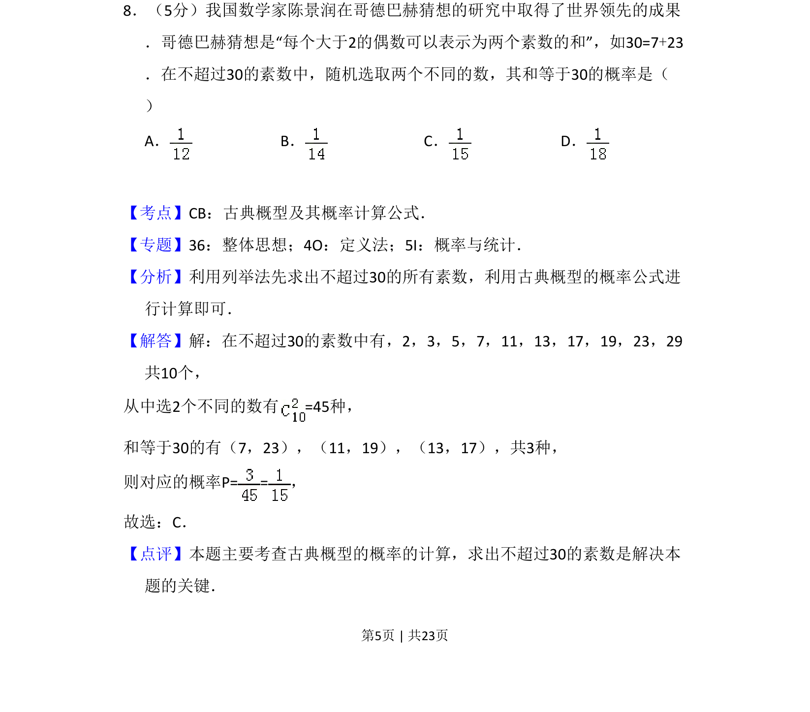
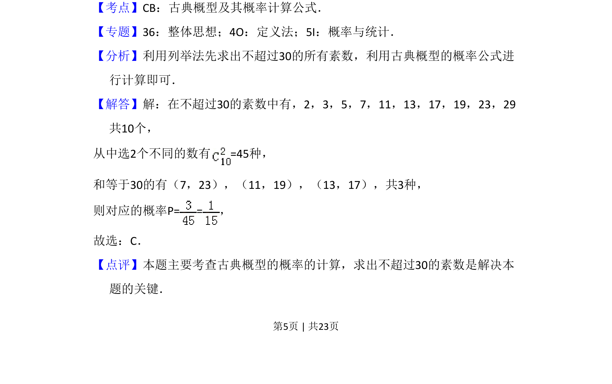

2018-理-08
考点：古典概型 概率计算 列举法 素数
题面

摘要
本题以哥德巴赫猜想为背景，考查古典概型的概率计算，需列举素数求组合数。
关联考点
答案与解析


📄 原 PDF 第 5 页：
素材/真题/吉林/2008-2024·（吉林）数学高考真题/2018年高考数学试卷（理）（新课标Ⅱ）（解析卷）.pdf
题干文本
8．（5分）我国数学家陈景润在哥德巴赫猜想的研究中取得了世界领先的成果 ．哥德巴赫猜想是“每个大于2的偶数可以表示为两个素数的和”，如30=7+23 ．在不超过30的素数中，随机选取两个不同的数，其和等于30的概率是（ ） A．B．C．D．
解析文本
【考点】CB：古典概型及其概率计算公式．菁优网版权所有 【专题】36：整体思想；4O：定义法；5I：概率与统计． 【分析】利用列举法先求出不超过30的所有素数，利用古典概型的概率公式进 行计算即可． 【解答】解：在不超过30的素数中有，2，3，5，7，11，13，17，19，23，29 共10个， 从中选2个不同的数有=45种， 和等于30的有（7，23），（11，19），（13，17），共3种， 则对应的概率P= =， 故选：C． 【点评】本题主要考查古典概型的概率的计算，求出不超过30的素数是解决本 题的关键．